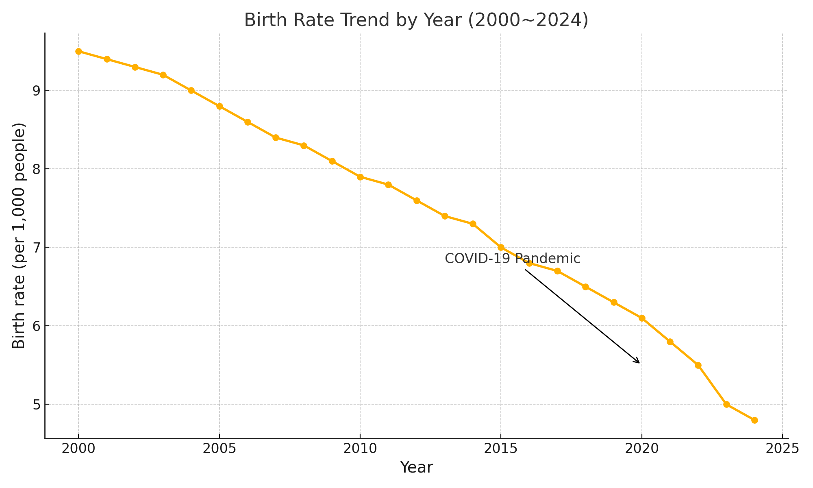

I.1. 강의 소개
1. 수업 방식
- 사전 학습: 수업에 참석하기 전에 교재를 읽고 오면 강의가 더욱 흥미롭고 이해가 잘 된다.
- 교재 학습: 교재를 읽으면서 빈칸을 채우거나 간단한 문제를 푼다. 빈칸은 정독하면 앞뒤 문맥을 통해 쉽게 맞힐 수 있다.
- 힌트 제공: 힌트가 있는 빈칸은 두 번까지 시도할 수 있으며, 두 번 모두 틀리면 첫 글자와 나머지 초성 힌트가 제시된다. (예: “통계량” → 통ㄱㄹ)
- 강의 영상: 녹화된 강의 동영상을 시청하면 빈칸의 정답을 확인할 수 있다.
- 과제 및 질의응답: 과제는 수업 시간에 채점하며, 이후 질의응답 시간을 통해 이해를 돕는다.
- 온라인 지원: 출석, 강의 자료, 과제 제출, 공지 사항 등은 본 사이트를 통해 제공한다.
2. 평가
성적에 반영하는 각 항목의 비율은 분반 별로 정한다. 새로운 평가 항목을 추가할 수도 있다.
- 읽기: 빈칸 채우기 또는 간단한 문제 풀이
- 과제: 매주 또는 \(2\)주마다 수업 시간에 채점
- 중간시험
- 기말시험
- 퀴즈
- 출석
3. 교재
- Statistics: Unlocking the power of data, Robin Lock 외 \(4\)인
- 교재 웹 사이트(http://www.lock5stat.com/)에서 Datasets, StatKey 사용
4. 주차별 강의 계획
| 주차 | 강의 내용 |
|---|---|
| 1주차(3.1~3.7) | 강의 소개 |
| 2주차(3.8~3.14) | 1.1절 데이터 구조 |
| 3주차(3.15~3.21) | 1.2절 모집단에서 표본추출 |
| 4주차(3.22~3.28) | 1.3절 실험연구와 관측연구 |
| 5주차(3.29~4.4) | 2.1절 범주형 변수 2.2절 양적변수 한개: 모양과 중심 |
| 6주차(4.5~4.11) | 2.3절 양적변수 한 개: 변동 2.4절 이상점과 상자그림 |
| 7주차(4.12~4.18) | 2.5절 양적변수 두 개: 산점도와 상관관계 2.6절 양적변수 두 개: 선형회귀 |
| 8주차(4.19~4.25) | 중간 시험 2.7절 데이터시각화와 다중변수 |
| 9주차(4.26~5.2) | 3.1절 표집분포 |
| 10주차(5.3~5.9) | 3.2절 신뢰구간의 이해 3.3절 부트스트랩 신뢰구간 |
| 11주차(5.10~5.16) | 3.4절 백분위수를 이용한 부트스트랩 신뢰구간 4.1절 가설검증 소개 |
| 12주차(5.17~5.23) | 4.2절 p-값 4.3절 통계적 유의성 판단 |
| 13주차(5.24~5.30) | 4.4절 가설검증의 오류 |
| 14주차(6.1~6.7) | 4.5절 통계적 추론 정리 |
| 15주차(6.8~6.14) | 기말 시험 |
5. 반응 시간 측정
6. 왜 수업 전에 ‘안 배운 내용’을 테스트할까요?
여러분이 아래에 풀게 될 문제는 아직 정식으로 배우지 않은 내용도 포함되어 있습니다. 이 테스트의 목적은 정답을 맞히는 것이 아니라, 여러분의 통계적 사고력의 출발점을 진단하는 것입니다.
1. 현재 상태를 파악하기 위해
- 여러분이 통계와 데이터에 대해 갖고 있는 직관과 사고 방식을 확인합니다.
- 잘못된 직관(예: 상관과 인과 혼동, 확률 오해)을 미리 드러내고, 수업 중 바로잡는 데 활용합니다.
2. 메타인지(내 학습 상태 자각) 훈련
- “내가 무엇을 알고 있고, 무엇을 모르고 있는가?”를 스스로 점검할 기회입니다.
- 이를 통해 학습 목표와 필요성을 분명히 느끼게 됩니다.
3. 수업 효과를 측정하기 위해
- 강의 시작 전과 종료 후의 사고력 변화를 비교하여 **수업 효과(learning gain)**를 확인합니다.
- 여러분의 성장을 데이터로 직접 확인할 수 있는 좋은 기회입니다.
4. 심리학적 사전 테스트 효과
- 연구에 따르면, 수업 전에 미리 풀어본 문제는 학습 중 더 주의 깊게 보게 되어 기억에 오래 남습니다.
- 처음에는 어렵더라도, 수업이 끝날 무렵 “아! 이제 알겠다!”라는 성취감을 느끼게 됩니다.
5. 평가 목적이 아님
- 이 테스트는 성적에 반영되지 않습니다.
- 정답 여부는 중요하지 않고, 오히려 틀리는 경험을 통해 배움의 필요성을 느끼는 것이 목적입니다.
결론
오늘의 테스트는 “여러분이 모르는 것을 알게 되는 첫걸음”입니다. 실패를 두려워할 필요가 없으며, 오히려 이 경험이 수업에서 배우는 내용을 더 깊이 이해하도록 도와줄 것입니다.
7. 사전 테스트
확인문제 1. 데이터와 변인 구분 – 대학 신입생 \(500\)명의 성별, 키, 전공 정보를 조사했다. 이때 ’키’는 무엇에 해당하는가?
1 개체
2 범주형 변수
3 수치형 변수
4 모집단
5 표본
확인문제 2. 표본과 모집단 구분 – 한 고등학교의 \(2\)학년 학생 \(50\)명을 조사하여 평균 키를 계산했더니 \(170\)cm였다. 이 값은 무엇에 해당하는가?
1 모집단의 평균
2 표본의 평균
3 전수조사의 평균
4 확률적 추정치
5 통계적 유의성
확인문제 3. 상관과 인과 구분 – 아이스크림 판매량과 익사 사고 수가 같은 시기에 증가하는 것을 발견했다. 가장 적절한 해석은?
1 아이스크림 판매가 익사 사고를 유발한다.
2 익사 사고가 아이스크림 판매를 유발한다.
3 여름철 기온 상승이라는 제3의 요인 때문에 둘 다 증가한다.
4 상관관계가 없으므로 우연이다.
5 인과 관계는 명확하지 않지만 직접적 영향이 있다.
확인문제 4. 확률과 불확실성 – 동전을 \(10\)번 던졌더니 모두 앞면이 나왔다. 다음 중 가장 합리적인 결론은?
1 다음에는 뒷면이 나올 확률이 더 높다.
2 여전히 앞면과 뒷면은 \(50\%\) 확률이다.
3 앞면이 나올 확률이 점점 증가한다.
4 동전은 무조건 앞면이 나온다.
5 동전이 조작되었을 가능성을 고려해야 한다.
확인문제 5. 데이터 시각화 해석 – 한 나라의 연도별 출생률 변화 그래프가 밑에 있다. 이 그래프에서 가장 합리적인 해석은?
1 출생률은 항상 일정하게 유지된다.
2 출생률이 감소하는 시점과 사회적 사건을 연관시킬 필요가 있다.
3 출생률은 사회적 요인과 무관하다.
4 출생률은 매년 동일한 폭으로 감소한다.
5 그래프에서 숫자 대신 색상 정보를 읽어야 한다.

확인문제 6. 표본 추출과 대표성 – 대학 만족도를 조사하기 위해 카페에 있는 학생 \(50\)명에게 설문을 진행했다. 문제점은 무엇인가?
1 표본 수가 충분히 크다.
2 무작위 추출이 아니므로 대표성이 낮다.
3 표본이 모집단과 동일하다.
4 응답자 편향이 전혀 없다.
5 표본 추출이 계통적으로 잘 이루어졌다.
확인문제 7. 평균과 분산 – A반과 B반의 시험 평균 점수는 같지만, A반은 점수가 고르게 분포하고 B반은 점수 차이가 크다. 어떤 반의 분산이 더 큰가?
1 A반
2 B반
3 같다
4 계산 불가능하다
5 분산과 평균은 관련이 없다
확인문제 8. 비율 해석 오류 – 신문에서 “전년 대비 범죄율이 \(50\%\) 증가”라는 제목이 났지만, 실제 범죄 건수는 \(2\)건에서 \(3\)건으로 증가한 것이었다. 이 경우 주의할 점은?
1 퍼센트 증가는 절대적 크기를 과장할 수 있다.
2 범죄율은 언제나 신뢰할 수 있다.
3 표본 수가 커서 문제 없다.
4 백분율은 데이터 해석에 필요 없다.
5 퍼센트 대신 평균을 사용해야 한다.
확인문제 9. p값 해석 – 신약의 효과를 검증한 실험에서 p값이 \(0.03\) 나왔다. 가장 올바른 해석은?
1 신약은 \(97\%\) 확률로 효과가 있다.
2 신약이 효과 없을 확률은 \(3\%\)다.
3 효과가 없다는 가설 하에서 이런 데이터가 나올 확률은 \(3\%\)다.
4 신약은 무조건 효과가 있다.
5 p값은 통계와 무관하다.
확인문제 10. 통계와 맥락 – “우리나라 평균 소득은 연 \(4\)천만 원이다”라는 통계를 해석할 때 고려해야 할 점은?
1 분산과 소득 불평등 정도를 함께 봐야 한다.
2 평균만 있으면 다른 지표는 불필요하다.
3 소득 분포는 언제나 정규분포다.
4 맥락은 중요하지 않다.
5 개인 사례만으로 판단한다.